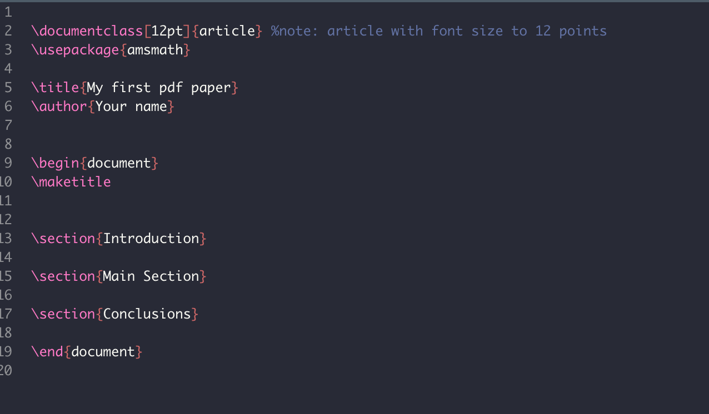
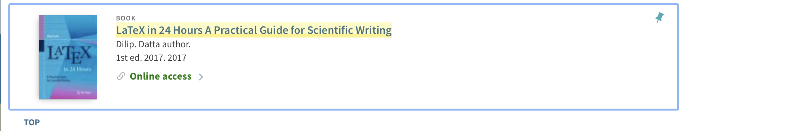

ETC5513: Reproducible and Collaborative Practices
Undoing, exporing and cleaning with git
Lecturer: Michael Lydeamore
Department of Econometrics and Business Statistics
Open Frame

Fixing your commit messages
Last week most of us got stuck in Vi mode
To fix this, run the following:
Windows
MacOS
This will set either notepad or TextEdit to be your commit editor (much nicer).
On Mac, note you must quit (not just close the window) for the commit message to be complete.
🧠 Today’s Goals
- Learn how to safely undo and explore commits
- Understand how to recover lost work
- Get more comfortable with the Git timeline and history
- Clean up messy projects
🧠 Git Mental Model
Git works across three layers:
- Working Directory: your actual files
- Index (Staging Area): what will be in your next commit
- HEAD (Repository): your last committed snapshot
Some examples: - git add moves changes → index - git commit moves index → HEAD - git reset moves HEAD pointer (soft/mixed/hard)
🔁 Reverting and Resetting – Recap
git revert
- Creates a new commit that undoes a previous one
- Safe on shared branches (e.g.
main)
git reset
- Moves your branch pointer backward
- Can rewrite history (dangerous on shared branches!)
- Options:
--soft: Keep changes staged--mixed: Keep changes unstaged--hard: Deletes changes
🧵 Detached HEAD
- Happens when you check out a specific commit, not a branch
- Useful for exploring history
- If you make changes in this state, they can be lost unless you make a branch
🧪 Demo: Detached HEAD + Branch
- In the terminal or Git pane:
- Copy a commit hash from earlier and run:
You’re now in detached HEAD!
🛟 Rescue Your Work
If you want to keep changes made in detached HEAD:
✅ This creates a new branch from that point!
✍️ git commit --amend
Use this when you:
- Made a typo in the last commit message
- Forgot to include a file
- Want to slightly edit the last commit
🧪 Demo: Amending a Commit
- Make a small commit
- Realize you forgot something
- Stage the missing file, then run:
🎯 You can edit the message or leave it the same
⚠️ Avoid --amend if you’ve already pushed the commit
🔍 git reflog
- Shows every move of HEAD (including things Git log forgets)
- Useful to recover commits after a reset or checkout
🧪 Activity: Oops, I reset too far!
- Make a commit
- Reset to a previous state:
- Run
git reflogto find the lost commit
- Use:
Then:
🎉 You’ve recovered “lost” work!
🗑️ git rm: Remove Files from the Repository
- Use
git rmto delete a tracked file from both your working directory and Git’s index. - Git will stage the deletion automatically.
✅ After this commit, the file will no longer exist in your working directory or the repository.
❗ Why Not Just Delete the File?
- If you delete a file in RStudio or your file browser:
- Git will show it as “deleted: filename.txt”
- But you still need to
git addthe deletion
# After deleting manually:
git status # Shows deletion
git add filename.txt
git commit -m "Remove file"✅ git rm does both steps at once — it’s safer and cleaner
💡 Recovering a Deleted File
If you haven’t committed the deletion yet:
If you already committed the deletion:
✅ Or use git reflog to find the commit where the file still existed
🧾 git rm --cached: Keep the File, Remove It from Git
- Use this when you’ve added a file to Git by mistake, but you don’t want to delete it from your computer
- Git stops tracking it — but the file stays in your working directory
✅ The file will still be on disk, but not in the next commit
🧠 Common Use Case
You committed a large data file by accident
- Add the filename to
.gitignore - Run:
- Push your changes
- The file is now ignored and won’t be re-added
✅ Useful for cleaning up mistakes without losing the file
🧹 git clean
- Deletes untracked files (not in Git yet)
- Helpful when switching branches or cleaning clutter
⚠️ Warning
git cleanis permanent- You can’t undo it with
reflogor reset - Always use
-nfirst to preview
🧪 Activity: Cleaning Up
- In RStudio, create a few new files but don’t add them to Git
- Run:
- If it looks right:
✅ Now those untracked files are gone!
🧠 When to Use What
| Situation | Use This |
|---|---|
| Undo safely on shared branches | git revert |
| Clean up your last commit | git commit --amend |
| Rewind local commit history | git reset |
| Accidentally reset or lost work | git reflog |
| Delete untracked junk | git clean |
Questions?
- When would you not use
reset? - What does
refloghelp you find thatlogdoesn’t? - Have you ever thought you lost work but actually didn’t?
🍥 What Is Squashing?
Squashing means combining multiple commits into a single one.
It’s useful for:
- Cleaning up messy history
- Preparing code before pushing or merging
- Grouping small fixes into one meaningful commit
Squashing doesn’t change your code — just your history!
🧠 How Squash Works
Before squashing:
If B, C, and D are all part of one logical change, we can squash:
✅ One clean commit — easier to read, review, and share.
🛠️ How to Squash Commits
Use interactive rebase to squash:
You’ll see:
Change to:
Then save + edit the commit message.
⚠️ When (and When Not) to Squash
✅ Good times to squash:
- Before pushing a feature branch
- To combine tiny commits (“fix typo”, “rename var”, “oops”)
❌ Avoid squashing:
- After you’ve pushed to a shared branch (rewrites history!)
LaTeX

LaTeX template
LaTeX template
\begin{document}
% Packages to be used
1\usepackage{amsmath}
2% Creating title
\title{This is an example}
\author{ETC5513, Monash University}- 1
- List all the packages
- 2
- % = comments
LaTeX template
- 1
- Open the document
- 2
- Sections each get a ‘section’ header
- 3
- Close the document at the end.
We are going to use LaTeX via Quarto files
In order to be able to use LaTeX within our Quarto documents, we need to install tinytex:
or
You don’t need the full LaTex installation for this unit, just this package.
Integrate a LaTeX template into a quarto file
There are different ways:
- If the file features are not too complicated. We can simply add some of the necessary LaTeX packages into our YAML preamble. You will be working with this example in the tutorial:
title: "Reproducible and Collaborative Practices"
subtitle: "Tutorial 7"
author: "Your Name"
institute: "Department of Econometrics and Business Statistics"
output:
pdf:
toc: true
toc_depth: 2
number_sections: true
highlight: tango
header-includes:
- \usepackage{titling}
- \pretitle{\begin{center} \includegraphics[width=5in,height=13in]{figs/front.jpg}\LARGE\\}
- \posttitle{\end{center}}
- \usepackage{fontawesome}
- \usepackage[most]{tcolorbox}
- \usepackage{xcolor}
- \usepackage{sectsty}
- \sectionfont{\color{olive}}
- \usepackage{verbatim}Integrate a LaTeX template into a quarto file
There are different ways:
- Another possibility is to use a
preamble.tex - And incorporate that into our Quarto file (we will look into this in Week 8):
Reference
Quarto PDF themes
Another way to include styling is to use a Quarto PDF extension. For example:
…and more here
Quarto PDF themes
These themes have the advantage of having done a lot of the LateX formatting for you. Looking inside the Quarto Monash memo, we have:
\pretitle{%
$if(branding)$%
\begin{textblock}{4}(1.9,0.85)\includegraphics[height=1.5cm]{monash2}\end{textblock}%
\begin{textblock}{4}(17.25,0.8)\includegraphics[height=1.5cm]{MBSPortrait}\end{textblock}%
\begin{textblock}{6}(13,28)\includegraphics[height=0.7cm]{AACSB}~~~
\includegraphics[height=0.7cm]{EQUIS}~~~
\includegraphics[height=0.7cm]{AMBA}
\end{textblock}Which is doing a lot of positioning of pictures for the template.
Week 6 Lesson
Recap
- Undoing mistakes with
amend,revert, andrm - Cleaning repos
- An introduction to latex

ETC5513 Week 7